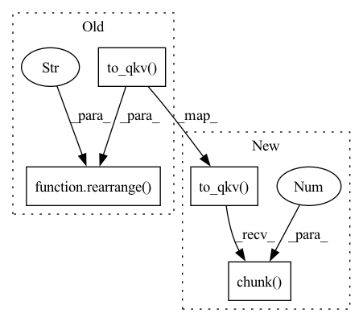

Pattern ID :8918
Before Change
def forward(self, x):
b, c, h, w = x.shape
qkv = self.to_qkv( x)
q, k, v = rearrange( qkv, "b (qkv heads c) h w -> qkv b heads c (h w)" , heads = self.heads, qkv=3)
k = k.softmax(dim=-1)
context = torch.einsum("bhdn,bhen->bhde", k, v)
out = torch.einsum("bhde,bhdn->bhen", context, q)
out = rearrange(out, "b heads c (h w) -> b (heads c) h w", heads=self.heads, h=h, w=w)After Change
def forward(self, x):
b, c, h, w = x.shape
qkv = self.to_qkv(x).chunk(3 , dim = 1)
q, k, v = map(lambda t: rearrange(t, "b (h c) x y -> b h c (x y)", h = self.heads), qkv)
q = q * self.scale
k = k.softmax(dim = -1)In pattern: SUPERPATTERN
Frequency: 3
Non-data size: 4
Instances Fragment ID: 32724130
Project Name: lucidrains/denoising-diffusion-pytorch
Commit Name: 91cff459394b784f870f3998023439796c95b7ca
Time: 2022-01-25
Author: lucidrains@gmail.com
File Name: denoising_diffusion_pytorch/denoising_diffusion_pytorch.py
M Class Name: LinearAttention
N Class Name: LinearAttention
M Method Name: forward(2)
N Method Name: forward(2)
M Parent Class: nn.Module
N Parent Class: nn.Module
M File Name: denoising_diffusion_pytorch/denoising_diffusion_pytorch.py
N File Name: denoising_diffusion_pytorch/denoising_diffusion_pytorch.py
M Start Line: 180
M End Line: 181
N Start Line: 168
N End Line: 170
Before Change
def forward(self, x):
b, c, h, w = x.shape
qkv = self.to_qkv( x)
q, k, v = rearrange( qkv, "b (qkv heads c) h w -> qkv b heads c (h w)" , heads = self.heads, qkv=3)
k = k.softmax(dim=-1)
context = torch.einsum("bhdn,bhen->bhde", k, v)
out = torch.einsum("bhde,bhdn->bhen", context, q)
out = rearrange(out, "b heads c (h w) -> b (heads c) h w", heads=self.heads, h=h, w=w)After Change
def forward(self, x):
b, c, h, w = x.shape
x = self.norm(x)
qkv = self.to_qkv(x).chunk(3 , dim = 1)
q, k, v = map(lambda t: rearrange(t, "b (heads c) h w -> b heads c (h w)", heads = self.heads), (q, k, v))
q = q * self.scale
k = k.softmax(dim=-1) Fragment ID: 32724129
Project Name: lucidrains/ddpm-proteins
Commit Name: 7348a21bc4ed9be6ea1aa6bccef3647294573726
Time: 2021-06-14
Author: lucidrains@gmail.com
File Name: ddpm_proteins/ddpm_proteins.py
M Class Name: LinearAttention
N Class Name: LinearAttention
M Method Name: forward(2)
N Method Name: forward(2)
M Parent Class: nn.Module
N Parent Class: nn.Module
M File Name: ddpm_proteins/ddpm_proteins.py
N File Name: ddpm_proteins/ddpm_proteins.py
M Start Line: 173
M End Line: 174
N Start Line: 166
N End Line: 169
Before Change
def forward(self, x, mask = None):
b, n, _, h = *x.shape, self.heads
qkv = self.to_qkv( x)
q, k, v = rearrange( qkv, "b n (qkv h d) -> qkv b h n d" , qkv = 3, h = h)
dots = torch.einsum("bhid,bhjd->bhij", q, k) * self.scale
if mask is not None:After Change
def forward(self, x, mask = None):
b, n, _, h = *x.shape, self.heads
qkv = self.to_qkv(x).chunk(3 , dim = -1)
q, k, v = map(lambda t: rearrange(t, "b n (h d) -> b h n d", h = h), qkv)
dots = torch.einsum("bhid,bhjd->bhij", q, k) * self.scale
Fragment ID: 32724128
Project Name: lucidrains/vit-pytorch
Commit Name: 6d1df1a9701dcef683b19abd09136ba23a01a770
Time: 2020-10-22
Author: lucidrains@gmail.com
File Name: vit_pytorch/vit_pytorch.py
M Class Name: Attention
N Class Name: Attention
M Method Name: forward(3)
N Method Name: forward(3)
M Parent Class: nn.Module
N Parent Class: nn.Module
M File Name: vit_pytorch/vit_pytorch.py
N File Name: vit_pytorch/vit_pytorch.py
M Start Line: 50
M End Line: 51
N Start Line: 50
N End Line: 51